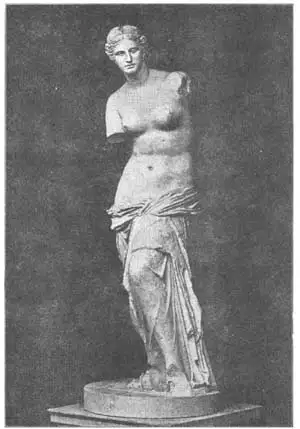
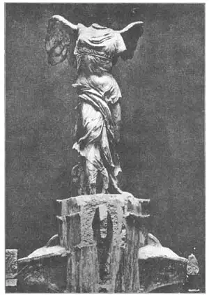

38
AFTER PHIDIAS
菲迪亚斯之后

HAVE you a Greek nose? Do you know what a Greek nose is? It’s a nose which forms a straight line from the forehead as seen from the side. Look at the people around you and see if any have Greek noses. Very few do have them nowadays and not all of the old Greeks had them, either, but the Greek sculptors thought this kind of nose the most beautiful and so they made Greek noses on their statues. Here is a statue that shows a perfect Greek nose. It is a statue of the messenger of the gods, whose name was Hermes.
This statue is of a strong and athletic youth. He is holding in his arms a little boy whom Zeus had given him to take care of. Hermes looks thoughtful as be tenderly holds the baby, and you can almost imagine the baby is reaching up to pull Hermes’s curly hair. What he really was reaching for was a bunch of grapes which Hermes held in his hand as a father nowadays might dangle his watch. This statue has lost parts of its arms and legs, but the head and body are still perfect and probably no broken piece of sculpture in the world is more charming or more beautiful than this. It was made by a Greek sculptor named Praxiteles (Prax-it’el-lees) and if he had made nothing else or done nothing else in his life, this one statue was great enough to make him famous through the ages.
Praxiteles is supposed to have made several other statues—one, a faun which gave the title to a book by Nathaniel Hawthorne—“The Marble Faun”—but we are not sure that there are any other sculptures in existence that he himself made.
Perhaps the best known of all statues in the world is one of Venus, the Goddess of Love and Beauty, which was found on the Greek Island of Melos and so is called the Venus of Melos—or, sometimes, Venus de Milo. She too has a perfect Greek nose, though we can’t see it in the front view. We do not know who the sculptor was, but some people now think that one of the pupils of Praxiteles must have made it. This Venus has no arms, but a great many people have tried to imagine what the arms were doing when she did have them. Some say that she was holding a bronze shield on her knee and looking into its brightly polished surface to see herself. People had no glass mirrors at that time. Their mirrors were made of shiny metal. Others say she held a lance or something else or nothing at all, but no one is sure.
The Venus was discovered not so many years ago, just by accident. A man happened to pass by a lime kiln on the island one day and the Venus was lying on the ground near the lime kiln. A lime kiln is a kind of furnace where stone is burned to turn it into lime. The Greek owner of the lime kiln, like a good many people nowadays, saw no beauty in the old broken statue and was about to break it up and put it in the furnace to make it into lime. The man who happened by just in the nick of time did know how valuable the statue was and he bought it for just so much broken marble. After some time, France bought it and placed it in the Louvre in Paris. It is one of that great museum’s chief treasures and could not be bought for a fortune—not for any sum of money whatever.
Praxiteles had a friend named Scopas who also was a sculptor, but he liked to make statues that showed people suffering. There are several statues showing Niobe and her children which Scopas may have done, for the statues are the kind he did—they show suffering. But some believe Praxiteles did them. Others think they were done by the pupils of one of these two sculptors.
The Greek story of Niobe is this:
Niobe was the mother of fourteen children—seven boys and seven girls—of whom she was very proud. But she made the mistake of boasting of them to a goddess who had only two children. That was considered sacrilege and the goddess was jealous, so, as a punishment, all of Niobe’s children were killed before her eyes. Niobe, with her arms about her youngest child, is shown trying to shield her from the arrows of the gods. As her last child was killed, the gods, as a great favor, turned Niobe into stone so that she wouldn’t suffer any more.
One of the pupils of Scopas is supposed to have made another very famous statue which we call the Winged Victory, or the Victory of Samothrace because it was found on the Greek island of Samothrace. The statue was made to celebrate a victory of the Greeks on the water. The statue shows the Goddess of Victory standing on the prow of a boat, the wind blowing back her robe. Though she has neither head nor arms, you can, without half trying, see in your mind’s eye how she must have looked as she stood triumphantly erect, blowing a trumpet and facing the sea breeze.

NO.38-2 VENUS DE MILO（《米洛的维纳斯》）

NO.38-3 THE WINGED VICTORY（《双翼胜利女神》）
You may ask or wonder why some one has not repaired this Greek statue and others. That is, put on a new head or arms. As a matter of fact, many sculptors have tried to do so. Of course they were not allowed to experiment on the original statue, but they made copies and added the missing parts as they supposed those parts must have been. It may seem strange, but every such restoration, as it is called, has been so unsatisfactory, so ugly even, that every one prefers the broken statue instead of a restored one.
I know a little girl who always puts her hand over the illustrations in a book that she loves to read, “Because,” says she, “the picture I see in my mind is so much better than the picture in the book, that I don’t want the picture I have in my mind spoiled!” Can you picture in your mind how the Victory or the Venus once looked?
【中文阅读】
你的鼻子长得像希腊人吗？对希腊人的鼻子我们了解多少呢？希腊鼻就是从侧面看鼻子呈一条直线。看看周围有没有人长着希腊鼻呢。如今很少有人长希腊鼻了，而且也并不是所有古希腊人都长希腊鼻。但是，古希腊雕刻家认为这种鼻型最美，所以他们把自己雕像中人物的鼻子都雕成希腊鼻。下面的雕像向我们展示了最完美的希腊鼻。雕像是神的信使赫尔墨斯。
赫尔墨斯是一位身强力壮的年轻人。他手里抱着一个宙斯让他照看的婴儿。他小心翼翼地抱着婴儿，看上去若有所思。我们差不多能想象出小孩伸手去拉赫尔墨斯卷发的情景。事实上，小孩伸手去够的是赫尔墨斯手里的一串葡萄，就像现在抱在爸爸怀里的孩子伸手去够爸爸戴的手表一样。这座雕像失去了胳膊和腿，好在头和身子都保存无损。全世界也许再也找不到比这座残缺雕像更迷人、更漂亮的了。它是古希腊雕刻家普拉克希特制作的。即使他再没制过任何作品，甚至一生什么事也没干成，单就这座雕像也足以使他流芳百世了。
据说普拉克希特还制作了几座别的雕像。其中有一座是半人半羊的农牧神像，后来纳撒尼尔·霍桑以此来命名他的小说《玉石雕像》。不过，我们不确定这位雕刻家是否还有其他作品保存下来。
或许世界上最著名的雕像要数《维纳斯女神像》。维纳斯是智慧与美貌女神。因为这座雕像是在希腊米洛斯岛发现的，所以也称《米洛斯的维纳斯》，有时候也称《米洛的维纳斯》。维纳斯有一个完美的希腊鼻，只不过从正面看不到。我们不知道雕刻家是谁，现在有人认为是普拉克希特的一个学生。这座维纳斯像没有双臂，但是，很多人都在努力猜想有双臂的情形。有人说她手里拿着一副青铜盾牌，放在膝盖上，把磨得发光的盾面当镜子照。那时候还没有玻璃镜，所以就照闪闪发亮的金属面。也有人说她手里拿着一根长矛，或别的什么东西，或根本就什么都没拿。其实，没人能确定她手里到底拿了什么。
这座雕像是几年前偶然发现的。某天，有个人在岛上碰巧经过一座石灰窑，发现维纳斯雕像就躺在石灰窑不远的地上。石灰窑是一种用石头烧石灰的熔炉。这位希 腊石灰窑主人，像今天大多数人一样，没看出这座残缺破旧雕像的美，所以就打算把它敲碎后扔进炉子烧石灰。正在这关键时刻，那位碰巧路过者看出了这座雕像的价值，于是就按破损大理石的价格买下了。过了一段时间，法国把这座雕像买了去，放在巴黎卢浮宫。如今，它已成为卢浮宫最珍贵的珍宝之一——出多少钱也不卖的无价之宝。
普拉克希特有位雕刻家朋友，名叫斯克帕斯。他喜欢雕刻受苦受难的人像。有几座尼俄伯和她孩子的雕像可能出自斯克斯帕之手，因为这些雕像极似他的风格——表现人们受苦时的样子。不过有人认为是普拉克希特的作品。还有人认为它们是普拉克希特或斯克帕斯的学生们完成的。
在古希腊关于尼俄伯的故事是这样的：
尼俄伯是十四个孩子的母亲——七个男孩和七个女孩，并以他们为自豪。可是她犯了错——向一个只有两个孩子的女神夸耀自己的孩子。这在当时被认为是悖逆天理的。那位女神很是嫉妒，作为惩罚，她当着尼俄伯的面，将尼俄伯的十四个孩子全部杀死。雕像中，尼俄伯怀抱幼子，拼命遮挡女神的箭。这唯一活着的孩子还是被射杀了。但女神却发了善心，把尼俄伯变成一块石头，让她不再痛苦。
据说，另外有座非常著名的雕像是斯克伯斯的一位学生完成的。我们把这座雕像称作《双翼胜利女神》。因为它是在希腊萨莫色雷斯岛被发现的，所以也称《萨莫色雷斯胜利女神》。这座雕像是为庆祝希腊人一次海战的胜利而雕刻的。雕像上，胜利女神站在船头，海风吹拂着她的长袍。现在这座雕像的头和臂都不在了，但我们还是能够毫不费力地用我们心中的眼睛看见她吹着喇叭，迎着海风，昂首站立的得胜风姿。
我们也可能会问或者疑惑，为什么就没人来修补这些雕像呢，也就是说，给雕像补上一个新的头或臂。事实上，有许多的雕刻家都做过尝试。当然不允许他们拿原作做实验。他们做了许多摹制品，并按照自己的想法补上缺失的部分。谁知奇怪的是，每次修复都不尽如人意，甚至还使原雕像变丑了。所以人们还是宁愿使它们保持原样。
我认识一个小女孩，她总是在读到精彩之处时用手遮住书上的插图。她说：“因为我想象中的图画要比书上的插图好看得多，我可不愿我心中的图画遭到损害！”那我们能否想象出胜利女神或维纳斯女神当初的风采呢？